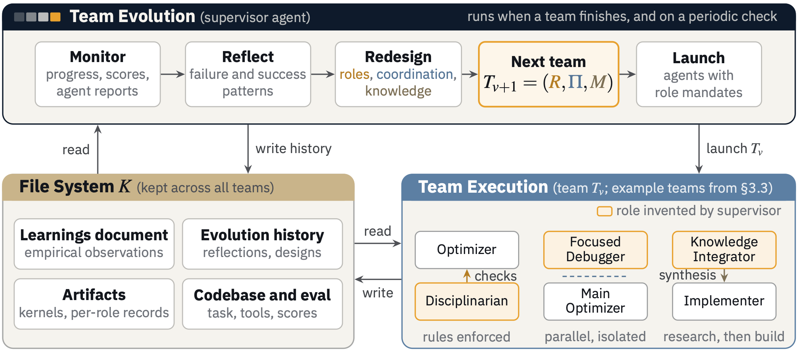
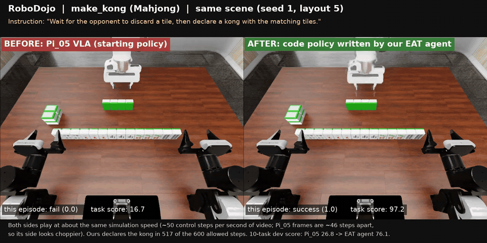
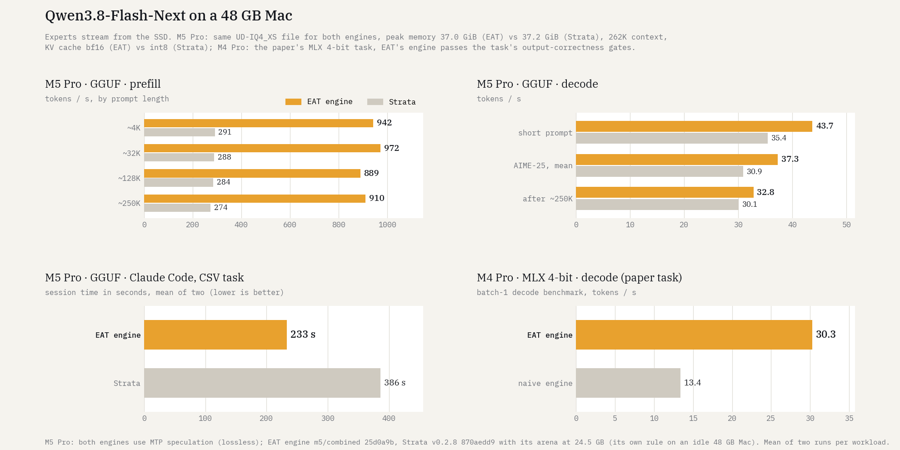
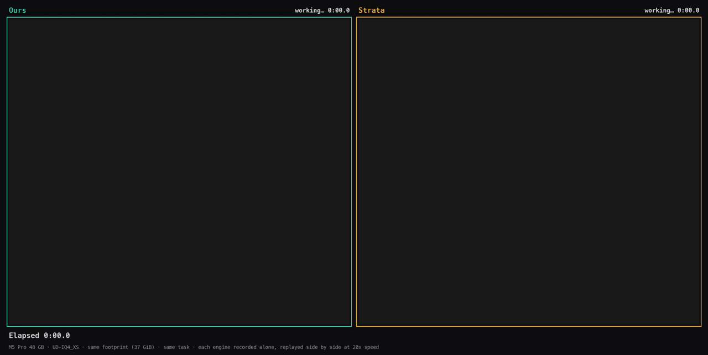
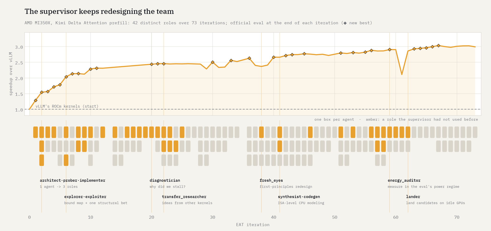
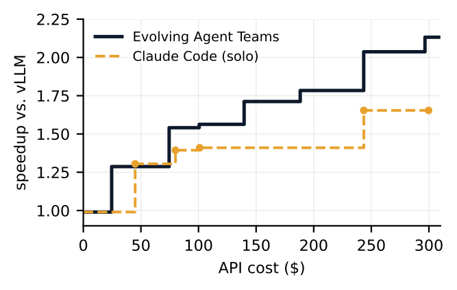
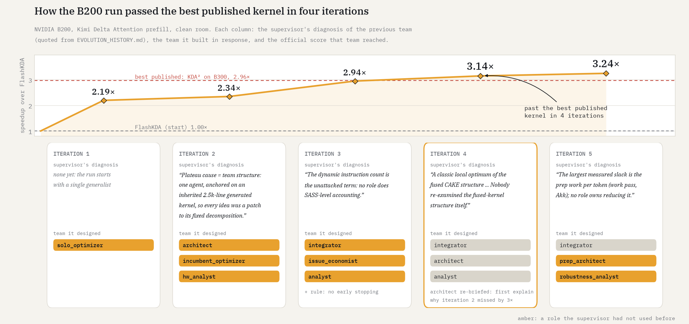

Handing the design to the agents
More and more, we point LLM agents at problems that do not have an end. Make this system faster. Make this policy succeed more often. Push this score as high as it will go. There is no final answer to submit, only a metric and a budget, and the agent's job is to keep improving for hours or days.
This post is about how my approach to these problems changed. It went through four stages, and at each one I handed more of the design to the agents: first a harness I designed around the LLM, then a single agent running its own loop, then a team of agents whose roles I designed, and finally an agent that designs the team. Each stage worked better than the last and failed in a way that pointed to the next. Where I ended up is Evolving Agent Teams (EAT): a supervisor agent that watches a team of agents, diagnoses why it stalled, and redesigns the team. At the end I describe four tasks we ran it on: a robot policy, a serving engine on a Mac, and the same attention kernel on two different GPUs.
Many of the examples below come from GPU kernels, because that is where I started and where the failures were easiest to see. The lessons are not about kernels.

First: a harness designed by people
The first wave of LLM optimizers put the LLM inside a loop that a person designed. FunSearch, AlphaEvolve and its open-source counterpart OpenEvolve keep a population of programs and use the LLM to mutate them; OPRO and GEPA do something similar for prompts. The person decides the steps (propose, implement, evaluate, select) and the LLM fills them in. My own K-Search (code) was in this family. In K-Search the LLM also maintains a co-evolving "world model": a structured tree of hypotheses about what limits the current solution, which alternatives exist, and which have been tried, with planning (choosing what to try next) decoupled from implementation (writing the code). We applied it to GPU kernel optimization, and on a hard attention kernel from DeepSeek-V3 it reached 0.61× of the expert-written kernel, the best result at the time.
What stayed with me was how it stopped. On that kernel, the fast design required a hardware feature that is notoriously hard to get correct, and every run settled on an easier design with a lower ceiling. The right idea was in the world model. What the system could not do was decide that the next step should be a long, frustrating debugging effort rather than another round of planning and implementing. The loop was mine, so the only moves available were the ones I had built in.
Then: an agentic loop
Soon after, coding agents became good enough to run the loop themselves. SWE-agent had already shown that an agent with the right tools could work through a real repository; with Claude Code, or a setup like Karpathy's autoresearch, where agents run training experiments on their own, a single agent with a good task description decides what to read, what to try, when to measure and what to keep, for hours at a time. It does most of what a hand-built harness does, with far more flexibility: if the next step should be reading documentation or writing a test, it can just do that.
It also showed the same failure, more clearly. Agents drift toward what they can make work. Faced with a direction that is promising but painful, a strong agent tries it, hits a few failures, and quietly switches to something easier, then spends the rest of its budget polishing that. It makes progress the whole time. Every step is locally reasonable. Nothing in the loop ever asks whether the current direction is still worth pursuing, because the only one who could ask is the agent doing the work.
Then: a team I designed
The moment that moved me to teams came while I was trying to rebuild K-Search on top of Claude Code. I asked it to create a team of two agents (Claude Code now supports this directly as agent teams), an Implementer and a Planner, and to implement FlashInfer's MLA paged-decode CUDA kernel, the same DeepSeek attention kernel. The Implementer spent about twenty turns writing tests and debugging its use of wgmma, the hardware feature that had stopped K-Search, and kept getting stuck. The Planner noticed the stagnation and, on its own decision, went off to read the CUTLASS documentation carefully, found the bug and suggested the fix. The Implementer applied it and it worked immediately.
That was exactly the step K-Search could not take, and nobody had told the Planner to take it. A second agent, standing outside the work, could see that the work was stuck.
Hand-designed teams were not a new idea. ChatDev and MetaGPT staff a virtual software company with a CEO, programmers, reviewers and testers; AutoGen made it easy to wire agents into conversations; Anthropic's multi-agent research system has a lead agent that plans and spawns subagents to search in parallel. In all of them, a person decides which roles exist.
So I designed a bigger team. Four roles anyone in the field would recognize: a planner, a researcher, an implementer and a profiler, each its own agent with its own mandate, coordinating through shared files and messages. It felt like the right structure, and it started slower than a single agent.
One episode explains most of it. The team spent a long time on a bug where data was laid out in memory in the wrong format. Every piece of information needed to find it was in the team: the researcher knew the required format, and the implementer had the code. But each role answered the questions it was asked. They exchanged messages like "LBO=16, confirm?", agreed with each other, and looked for the bug elsewhere. Nobody opened the implementer's file and compared it with the spec, although every agent could. A single agent holding both would have seen it immediately. In the two-agent team, the Planner had stepped outside its role; with four sharper mandates, nobody did.
That changed how I think about roles. They do not only divide work; they divide attention. A fixed set of roles is a bet about which boundaries the problem will never cross, and hard problems cross them constantly.
They also change over time. Long optimization runs move through phases: first get anything working, then find what actually limits it, then often rethink the design, then tune. A debugger is essential in the first phase and useless in the last. A profiler's analysis is valuable until the design changes, and then all of it is stale. The team that fits one phase is wrong for the next.
My natural reaction was to look at each failure and redesign the roles: add a debugger here, someone to check the code against the spec there, a profiler once the design settles. At some point it became clear that this redesign loop was the work that mattered most. And the Planner had already shown that an agent could notice when a team is stuck; the next step was to let an agent decide what the team should become.
Now: let an agent design the team
EAT gives that job to a supervisor agent that never touches the solution. When a team finishes, or on a periodic check, the supervisor reads the team's transcripts and scores, writes down why progress stalled, and designs the next team: which roles exist and what each one owns, how they coordinate (in sequence, in parallel on separate branches, or both), and how knowledge gets recorded. There are no predefined roles; every role in every run was invented for the situation at hand. A persistent file system carries what earlier teams learned: a learnings document, the supervisor's evolution history, and every team's artifacts.
Others have also let an LLM shape the system around the work. DyLAN picks agents from a hand-written pool of roles, and AgentVerse regenerates its group each round. ADAS has a meta-agent search for a better agent design, and Meta-Harness has a coding agent rewrite the harness around a fixed model. The difference in EAT is that the redesign happens inside one long run: the team is rebuilt for the phase the work is in, and what earlier teams learned is carried forward rather than thrown away.

The supervisor's diagnoses are what make this work, and they are refreshingly concrete. A few we saw repeatedly:
- Drift. A single agent was abandoning a hard constraint whenever it became inconvenient. The supervisor added a "disciplinarian" whose only job was to reject changes that broke the constraint or changed more than one thing at a time.
- Blocking failures. Three teams in a row failed on the same sub-problem, and each failure stalled everything else. The supervisor split the work: one agent may only debug that piece in isolation, and another may not touch it while improving everything else.
- Lost knowledge. A key recommendation from an earlier team was ignored by the next three, because it lived in that team's report rather than in the shared notes. The supervisor created a knowledge integrator and a synthesis document that every later team had to read.
- Bad measurements. A team had been evaluating its own ideas under different conditions from the real eval. The supervisor created an auditor to fix the measurement and re-open what had been wrongly rejected.
On the attention kernel where K-Search and my hand-designed team had stalled, the evolving team reached 0.74× within the paper's budget, against 0.31× for the fixed four-role team, and with more budget it went past the production expert kernel.
How multiple agents help with optimization
Looking back, I think multi-agent setups help long-running optimization for a few specific reasons, and none of them is simply "more compute".
- Depth of context. One agent that implements, measures and researches splits its attention across all three. A role that only designs measurements, or only reasons about the overall design, goes much deeper.
- Isolation. Some work needs to fail safely. An agent allowed to chase a risky idea on its own branch can spend hours on a dead end without blocking anyone, and a dead end confirmed conclusively is worth something.
- Independent checking. A challenger that questions a claimed ceiling, or an auditor that questions the measurement itself, catches exactly what the agent doing the work is least likely to catch.
- Someone who owns the plan. Findings pile up. Writing them down is not enough; someone has to turn them into the next plan.
All of these depend on having the right roles at the right moment, which is exactly what a fixed team cannot give you. The structure has to come from outside the work, and it has to keep changing. An agent absorbed in the problem is rarely in a position to notice that the team around it should look different.
It is not free, and it does not always win. On one of the tasks below, a single agent kept up with the team at the same budget; I come back to that.
Four tasks
We ran EAT on four new settings with newer models, the same supervisor prompt and no predefined roles. They have little in common except a score and a budget. Each was a single long run, so they are case studies rather than controlled comparisons, but they are where I learned the most.
A robot policy for RoboDojo
RoboDojo has 42 dual-arm manipulation tasks in simulation, scored from 0 to 100 across generalization, memory, precision, long-horizon and open-ended skills. The team edited a Python controller with a skill module per task. At run time the policy can call a frozen vision-language-action model (π0.5) and an LLM (at most 20 calls per episode), from three RGB cameras, joint states and the instruction. No model training is allowed.
We were careful about leakage. Agents developed on one random seed; two held-out seeds were evaluated only by us, and the agents never saw those scores. Their network access was limited to the model API and the evaluation fleet, and other leaderboard entries' code was removed from the machines. The first 36 iterations optimized a 10-task subset, and the rest used all 42. Everything ran on Claude Sonnet 5.5, for $472 through iteration 50.
The final policy scores 62.1 on the held-out seeds (62.6 on the development seed), against 11.4 for π0.5 alone and 55.3 for the best leaderboard entry as of Oct 26, 2026. Some tasks moved dramatically: making a kong in Mahjong went from 16.7 to 97.2, and the arrange_largest_number task from 2.5 to 88.3.

A model larger than memory, served from a Mac
Qwen3.8-Flash-Next at 4 bits is about 79 GB of weights, so on a 48 GB M4 Pro its experts have to stream from the SSD. Starting from a naive Metal port of the FreeToken MoE serving system, the team had to make it serve faster without changing the model: no skipping experts, no lower top-k, no fewer bits, with gates on output agreement, peak memory and swap. The score replays sessions recorded from a real coding-agent loop, plus a decode benchmark. All agents used Claude Opus 5.5, with web tools disabled.
What I found most interesting was how often the supervisor changed the way the work was divided. It resized the team from one agent to three and then two, and re-cut the roles six times: by file type (I/O vs. compute), by bottleneck (speculation, cache, offload), by phase (decode vs. prefill), and finally by measured GPU time per token. One finding I would not have guessed came from a dedicated cache role: most decode misses had already been read during the preceding prefill, so the right lever was which experts to admit into the cache, not which to evict.
The final engine serves the recorded sessions 3.32× faster than the naive engine and decodes at 30.3 tokens/s in MLX 4-bit, against 13.4.
We then ran the engine on a GGUF file and a newer Mac, an M5 Pro with 48 GB, against Strata, an existing engine for the same model, on the same file and at the same peak memory (about 37 GiB), even though our engine keeps the KV cache in bf16 while Strata quantizes it to int8. Prefill is about 3.3× faster at every prompt length from 4K to 250K tokens, and decode is 1.22× faster after a short prompt; after a 250K-token prompt the two decode at about the same speed. With Claude Code running on the local model, a small CSV feature with tests takes 233 seconds on average against Strata's 386.


This is also the task where the team helped least. In a second run, the team and a single agent both started from the already optimized engine. At $200 they were close. The single agent's later changes were mostly parameter tweaks, like the half-life of the cache eviction policy, which helped the workload it was optimizing more than two held-out ones. The team led on both held-out workloads and kept finding real changes afterwards (decode lookahead hints, speculative decoding with exact verification, a larger victim cache). My reading is that when the remaining work is tuning within a stable design, one agent is competitive. The team matters when the problem is about to change shape.
An attention kernel on AMD MI350X
Kimi Delta Attention (KDA) is a linear-attention variant used in recent long-context models. The task was its prefill kernel on one AMD MI350X, scored against vLLM's hand-written production kernels over ten workloads, starting from a port of those kernels.
This was our longest run: 73 iterations over about eight days with Claude Opus 5.5, for $3.0K of API spend. The final kernel is 3.01× faster than vLLM's (2.09× to 4.63× per workload) and 7.3× faster than the open-source Triton kernel from Flash Linear Attention. The biggest gains came from redesigns, not tuning: for example, a "relay" that fuses two stages and hands intermediate state between workgroups through the shared cache.

Over the run the supervisor used 42 distinct roles: a diagnostician that only asked why the last team stalled, a transfer researcher bringing in ideas from other problems, "fresh eyes" redesigning from first principles without reading the current code, a lander that put finished candidates on idle machines. My favorite came late. Two iterations in a row shipped nothing, and the supervisor found that the team had been timing its ideas in a different power regime from the one the eval measured:
ENERGY AUDITOR. "The pattern runs on a power transient: device time is 1.08–1.29× the gapped time ... The team has therefore been pricing levers in a regime the score does not use. Your job is to fix the measurement and re-open what it may have mis-judged."
The next iteration set a new best. The team also caught a weakness in the task itself: the eval's test inputs let a class of bugs pass unnoticed, so it added a stricter correctness check that every later version had to pass.
From the same starting point with the same model, a single Claude Code agent reached 1.65× at $300; the team was at 2.13×.

The same kernel on NVIDIA B200, in a clean room
The same operator on an NVIDIA B200, scored against FlashKDA, a fused CUTLASS implementation. This run had no web access, only a fixed set of local references, including an existing kernel that the first team ported. Iterations 1 to 5 used Claude Opus 5.5 and later ones Claude Sonnet 5.5.
This run shows restructuring most clearly. Each team was designed from the supervisor's diagnosis of the previous one:

- Iteration 2. "Plateau cause = team structure: one agent, anchored on an inherited 2.5k-line generated kernel, so every idea was a patch to its fixed decomposition." An architect, an optimizer and an analyst replaced the single agent.
- Iteration 3. "The dynamic instruction count is the unattacked term: no role does SASS-level accounting." It created an
issue_economist, and added a rule against stopping early. - Iteration 4. "A classic local optimum ... Nobody re-examined the fused-kernel structure itself." Same roles, but the architect was re-briefed to first explain why its earlier redesign had missed.
- Iteration 5. "The largest measured slack is the prep work per token; no role owns reducing it." A
prep_architecttook it over.
None of these roles is exotic; a good engineering lead might create any of them. What a fixed design cannot provide is the timing. The cost-accounting role only makes sense once the design has settled, and the prep role only once everything else is fast enough that prep becomes the largest cost.
The final kernel is 3.44× faster than FlashKDA. KDA², a set of agent-written KDA kernels, reports 2.96× on the newer B300; running both in the same harness on the same B300, our kernel (recompiled, no code changes) scores 3.54× against 3.02× for KDA²'s best. Since the run started from a port of existing kernels, it measures improvement over a strong start rather than from scratch.
What I am still thinking about
- The supervisor's own memory. In long runs it compacts its context several times and rebuilds its picture from the file system. That mostly works, but the supervisor is now the longest-lived agent in the system, and its memory is the weakest link.
- Cost. Eight days and $3K for one result is efficient compared with a single agent at the same budget, but it is still a lot.
- Noisy feedback. All four tasks have a precise, fast score. A supervisor diagnosing plateaus from noisy numbers will diagnose the wrong things.
- Learning across tasks. Every run starts with no roles, yet many roles recur: a challenger, an integrator, an auditor. A supervisor that carries lessons from one problem to the next seems like the obvious next step, but I am not sure what should transfer and what should be rediscovered each time.
Try it
EAT runs as a Claude Code plugin:
/plugin install eat --marketplace caoshiyi/EATThen, in the repository you want to improve, ask something like "Use EAT to make bench.py faster on GPUs 0 and 1. Budget $200." It works on anything with a score you can compute.
Every supervisor and agent transcript from these runs is public, so you can read each diagnosis and redesign yourself:
- Paper (NeurIPS 2026): arxiv.org/abs/2610.36848
- Code: github.com/caoshiyi/EAT
- RoboDojo policy: github.com/caoshiyi/eat-robodojo-policy
- Kernels: github.com/caoshiyi/eat-kernels
- Transcripts: eva98/eat-evolution-traces
- Tasks: EAT Gym
This is joint work with Ziming Mao, Dacheng Li, Joey Gonzalez and Ion Stoica at Berkeley's Sky Computing Lab.
@inproceedings{cao2026eat,
title = {Evolving Agent Teams},
author = {Cao, Shiyi and Mao, Ziming and Li, Dacheng and Gonzalez, Joseph E. and Stoica, Ion},
booktitle = {Advances in Neural Information Processing Systems},
year = {2026}
}